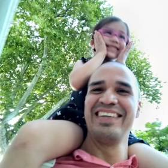

FONDECYT Postdoctoral Researcher
Universidad Adolfo Ibanez
Av. Diagonal Las Torres 2640, Penalolen, Santiago, RM 7941169, Chile
Contact: guido [dot] lagos [dot] barrios [at gmail.com]
Phone+Whatsapp: +56 9 8367 8158
Other profiles: Google Scholar, LinkedIn, ResearchGate
I'm a FONDECYT postdoctoral researcher at Universidad Adolfo Ibanez (UAI), and recently, from Oct 2018 to Mar 2021, I was an Assistant Researcher at the Industrial Engineering Department of the University of Santiago (USACH). During all of 2017 I was a postdoc at the Center for Mathematical Modeling, University of Chile.
I have a PhD in Operations Research from Georgia Tech, Atlanta, GA, USA. My advisor was prof. Ton Dieker and broadly speaking our work was about mathematical guarantees for efficiency and accuracy of algorithms that simulate stochastic processes and specific events of them. During 2016 I was a visiting student/research staff at the IEOR department, Columbia University. In the past I worked with Prof. Alexander Shapiro in multi-stage stochastic programming.
I studied Mathematical Engineering (a Chilean equivalent to a USA Math B.Sc. + Applied Math M.Sc.) at the Mathematical Engineering Dept. of Universidad de Chile, and also have a M.Sc. degree in Operations Management from Industrial Engineering Dept., Universidad de Chile too.
Methodology of Simulation, Stochastic analysis, Rare-event Analysis, Network reliability, Data Sciences, Computational Probability, Stochastic Programming. I really enjoy programming and playing with computers and gadgets. Also bicycling and swimming.
Learning in pre-processed scenario trees for production optimization in mining.
J. Valencia, M. Armstrong, X. Emery, G. Lagos.
In preparation.
Scheduling healthcare professionals in Chile: a simulation-based adaptive optimization scheme.
F. Jara-Moroni, G. Lagos, D. Machado, B. Saavedra, T. Torres.
In preparation.
Solving Constrained Consumption-Investment Problems by Decomposition Algorithms.
T. Homem-de-Mello, G. Lagos and B. Pagnoncelli.
In preparation.
Mean-field asymptotics of general reliability systems under the LFMO model.
J. Barrera, G. Lagos, P. Romero.
In preparation.
Adaptive Open-pit Mining Planning under Geological Uncertainty.
M. Armstrong, X. Emery, T. Homem-de-Melo, G. Lagos, T. Lagos, D. Saure (2020).
Submitted.
A framework for adaptive open-pit mining planning under geological uncertainty.
M. Armstrong, T. Homem-de-Melo, G. Lagos, T. Lagos, D. Saure (2020).
To appear in Optimization and Engineering.
Limit distributions of the upper order statistics for the conditionally-iid Marshall-Olkin distribution.
J. Barrera and G. Lagos (2020).
To appear in Extremes.
On the Euler discretization error of Brownian motion about random times. [arXiv:1708.04356] [winner of the 2017 APS Student Paper Competition; see here]
A.B. Dieker and G. Lagos (2017).
Submitted.
A Dichotomy for Sampling Barrier-Crossing Events of Random Walks with Regularly Varying Tails.
A.B. Dieker and G. Lagos (2016).
Journal of Applied Probability, Vol 54(4) pp. 1213-1232, December 2017.
Restricted risk measures and robust optimization.
G. Lagos, D. Espinoza, E. Moreno and J. P. Vielma (2014).
European Journal of Operations Research, 241, pp. 771-782.
Approximations for the Levy-frailty Marshall-Olkin order statistics.
J. Barrera and G. Lagos (2020).
Accepted to the Winter Simulation Conference 2020; December 13-16 Orlando, FL, USA.
On the Reliability of Dynamic Stochastic Binary Systems.
G. Lagos and P. Romero (2020).
Accepted to the 6th International Conference on Machine Learning, Optimization, and Data Science (LOD 2020); July 19-23, 2020, Tuscany, Italy.
Risk averse approaches in open-pit production planning under ore grade uncertainty: a Ultimate Pit study.
D. Espinoza, G. Lagos, E. Moreno and J. P. Vielma (2013).
Proceedings of the 36th International Symposium on Application of Computers and Operations Research in The Mineral Industry (APCOM 2013).
Robust Planning for an Open-Pit Mining Problem under Ore-Grade Uncertainty.
G. Lagos, D. Espinoza, E. Moreno and J. Amaya (2011).
Electronic Notes in Discrete Mathematics, 37, 15-20.
Accuracy and efficiency of barrier-hitting and extreme event simulation.
Ph.D. thesis (2017).
Advisor: Ton Dieker
Estudio de metodos de optimizacion robusta para el problema de planificacion de produccion en mineria a cielo abierto.
M.Sc. thesis (2011).
Advisors: Daniel Espinoza and Eduardo Moreno
FONDECYT Postdoctoral Research grant with project # 3180767, CONICYT Chile. Will fund my research activities over the period Mar 2018-Mar 2021.
Best Student Paper Award of the INFORMS Applied Probability Society, October 2017. For my paper on discretization of Brownian motion. The authors of the three other finalist papers were Zhengyuan Zhou of Stanford, Andrew Li of MIT, and Thodoris Lykouris and Daniel Freund of Cornell.
Algorithms & Randomness Center (ARC) Student Fellowship, Georgia Tech, Fall 2014.
Kiplinger Fellowship, Georgia Tech, August 2011 and August 2012.
Becas Chile-CONICYT Ph.D. abroad scholarship, Chile, November 2010.
System reliability and approximations of the Levy-frailty Marshall-Olkin distribution
Winter Simulation Conference 2020 (virtual meeting, Dec 2020)
Systemc risk and network reliability: asymptotic analysis and confidence bounds
INFORMS Applied Probability Society Conference (Brisbane, Australia, Jul 2019) // Science Park Informal Probability Seminar at Centrum Wiskunde & Informatica (CWI) (Amsterdam, The Netherlands, Dec 2018) // Industrial & Systems Engineering Seminar, Industrial Engineering Department, University of Santiago (Chile, Nov 2018) // INFORMS Annual Meeting 2018 (Phoenix, AZ, USA, Nov 2018) // Seminario Instituto de Ingenieria Matematica y Computational (IMC), Pontificia Universidad Catolica (PUC) (Chile, Aug 2018) // Seminario de Ingenieria Industrial e Investigacion de Operaciones (DIIIO), Universidad Adolfo Ibanez (Chile, Jul 2018) // Seminario Instituto de Sistemas Complejos de Ingenieria (ISCI), Universidad de Chile (Chile, Jul 2018)
Limit distributions and random walk approximations
Seminario Depto. de Ingenieria Matematica, Universidad Tecnica Federico Santa Maria (UTFSM) (Chile, May 2018) // Seminario Depto. de Ingenieria Industrial, Universidad de Concepcion (Chile, Dec 2017) // OPTIMA 2017, XII Chilean conference on Operations Research (Chile, Nov 2017) // Science Park Informal Probability Seminar at Centrum Wiskunde & Informatica (CWI) (Amsterdam, The Netherlands, Nov 2017) // 2017 INFORMS Annual Meeting (Houston, TX, USA; Oct 2017) // Institute for Math, Universidad de Valparaiso (Chile, Jul 2017) // Industrial Engineering and Operations Research (IEOR) Seminar, Universidad Adolfo Ibanez (Chile, Apr 2017) // Seminario Stochastic Modelos of Complex and Disordered Systems (MESCD) at the Center for Mathematical Modeling, Universidad de Chile (Chile, Mar 2017) // INFORMS Applied Probability Society Conference (Chicago, IL, USA; Jul 2017) [pdf] [gif] // "Applied Probability for Lunch--OR PIC" Seminar at IBM TJ Watson Research Center (Yorktown Heights, NY, USA; Nov 2016)
Sampling rare events of random walks with regularly varying increments: a dichotomy
2014 INFORMS Annual Meeting (San Francisco, CA, USA; Nov 2014) [pdf]
An introduction to Stochastic Dual Dynamic Programming (SDDP) method for multi-stage stochastic programming
Part of a presentation with Wajdi Tekaya for the course ISyE 8813 Stochastic programming, prof. Shabbir Ahmed, 2011 [pdf]
Risk-averse open-pit mining production planning
2012 INFORMS Annual Meeting (Phoenix, AZ, USA; Oct 2012) [pdf] // AGCO seminar, DII, Universidad de Chile, 2011 [pdf] // ALIO-INFORMS Joint International Meeting 2010, Argentina
Workshop co-organizer, "Reliability and Resiliency in Network Infrastructure: Simulation, Optimization & Analysis" (Jan 2019; Santiago, Chile)
Session organizer at the INFORMS Annual Meeting 2018 conference, in the Applied Probability Society track (Nov 2018; Phoenix, AZ, USA)
Seminar/reading group organizer: Industrial & Systems Engineering Seminar, Industrial Engineering Department, University of Santiago (2018-) // Data Sciences Reading Group at Universidad Adolfo Ibanez (2017-2018) // Student Applied Proability Seminar, at Columbia University on 2016 and at Georgia Tech on 2014-2015.
Reviewer: Journal of Applied Probability, Operations Research, Stochastic Models
Instructor:
Stochastic Models (Universidad de Santiago, Fall and Spring 2019, Fall and Spring 2020)
2145-S-DIO01 Advanced Simulation (Universidad Adolfo Ibanez, Spring 2017)
ISyE 3232 Stochastic manufacturing and service systems (Georgia Tech, Spring 2015)
Graduate Teaching Assistant:
ISYE 3232 Stochastic manufacturing and service systems (Georgia Tech, Summer 2014)
ISyE 6565 Probabilistic models (Georgia Tech, Fall 2012)
ISyE 3133 Engineering optimization (Gergia Tech, Summer 2012)

Last modified: Mon Sep 14th, 2020 // Made using Markdown
![[gif]](pubs/APS2017.gif){kind=link}